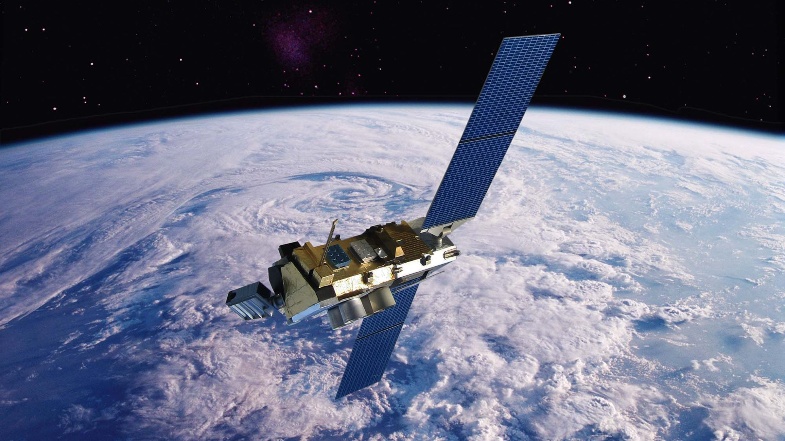

CANAVERAL, FL-In what experts are calling a breakthrough achievement that is poised to revolutionize American space exploration and telecommunications, NASA announced Friday it has successfully launched its first cordless satellite into orbit.
"Launch and deployment went smoothly, and now our Wireless 1 craft appears to be operating and communicating nominally without the aid of a standard 22,000-mile satellite cable," said Joint Agency Satellite Division director Sandra Smalley, explaining that, for the first time ever, a NASA satellite has been able to maintain contact with crew on the ground without remaining directly plugged into a computer and energy source at its launchpad. "We've come a long way since 1958, back when our satellites could only complete one or two orbits before their cords got wrapped around the earth and they plummeted back down to the ground. Now, with this revolutionary new technology, we actually have the potential to completely eliminate the labor-intensive task of untangling satellites whose cables have crossed paths and become tied in knots." If successful, Smalley said the advances in cordless technology should be transferrable to the agency's space probes as well, freeing NASA from having to continuously unspool billions of miles of wire as it has been doing for decades with Voyager 1 and 2.
Lucrative New Oil Extraction Method Involves Drilling Directly Into Petrol Stations
IRVING, TX-Hailing it as a rapidly replenishable and easily accessible fuel source, ExxonMobil revealed a lucrative new oil extraction method Friday that involves drilling directly into gas stations. "We've found nearly unlimited reserves of highly refined petroleum mere meters beneath thousands of service stations across the country," said ExxonMobil CEO Rex Tillerson, noting that the company had already erected oil extraction rigs alongside pump islands in all 50 states. "As I speak, we're yielding 3 million barrels per day just by boring through a few thin layers of asphalt, concrete, and metal. And, amazingly enough, the supply seems to somehow refill itself every week." Tillerson went on to say that the company was exploring the possibility that there were still massive untapped sources of oil already in Americans' cars, as well as in their homes.
Scientists Ask Congress To Fund $50 Billion Science Thing
WASHINGTON, DC-Top physicists from several major American universities appeared before a Congressional committee Monday to request $50 billion for a science thing that would further U.S. advancement science-wise and broaden human knowing.